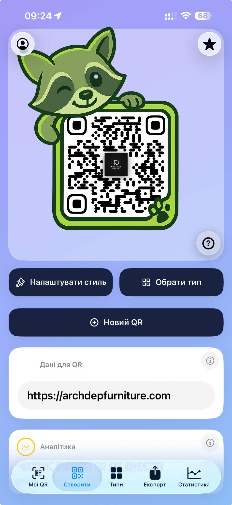

01 — A QR code should work and look on-brand
Generic generators restrict design and provide little visibility after a code is printed. The product needed to combine customisation, production-quality export and useful scan insight.

A QR-code generator designed as a complete commercial tool rather than a disposable utility.
Generic generators restrict design and provide little visibility after a code is printed. The product needed to combine customisation, production-quality export and useful scan insight.
We built custom eyes and frames, brand controls, dynamic destinations, scan statistics and vector export for print. The interface keeps a deep option set understandable on a phone.
The app is published on the App Store and demonstrates the complete Ixonity cycle: product logic, design, native engineering, testing and release.